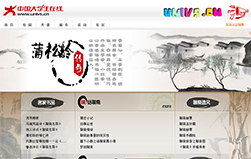
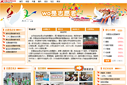
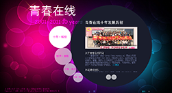
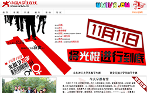
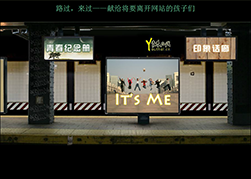

新闻频道
作为网站的重头戏，新闻频道包含了最新通知、活动海报、校园快讯、社会热点等部分，以服务学生、引导学生、贴近学生为宗旨，走的是清新、活泼而不失严谨的风格，网站孩子们敏锐的眼睛，将镜头聚焦到教学楼、餐厅、图书馆、事务中心等与学生生活学习最近的场所，传达最新通知，讨论校园热点，引导理工舆论潮流。
当然各学院丰富多彩的活动以及为推动促进学生工作的各项政策措施也是新闻频道源源不断的新鲜血液，保持了网站与各学院的良好沟通和长期合作。
视点访谈
视点栏目
家事国事天下事，事事关心。这就是视点栏目的综合写照。视点栏目现为稷下视点，是基于对社会上发生的热点事件，在客观事实的基础上，以我们在校学生的角度，发出自己的声音，是我校学生进行评论、交流思想的平台。稷下视点，以评论社会上发生的热点事件为主，发表自己的看法，可参考评论家对事件的评论，对事件各个方面进行分析，以加强读者对事件的了解和认识。通过对热点事件的分析评论，对好事进行赞扬，对不合理的现象进行批评，从而引起大家对社会事件的反思。
访谈栏目
校园中的哪些事你不知道，通知我们，我们一定会迅速进行采访，了解清楚前因后果；校园中有哪些人和组织需要宣传，告诉我们，我们一定会把他们优秀的品质和独特的故事分享给大家……这就是我们访谈栏目。我们访谈栏目包括青春故事和校园访谈两个板块，立足大学校园，寻找故事中的主角，宣扬青春的童话，展示各种组织的风采，让同学们更好的了解校园中的人物、团体。莫管风云万变，精彩尽在访谈！
共建频道
心灵之约
曾经拥有的,不要忘记,已经得到的,更要珍惜,属于自己的不要放弃,已经失去的,留为回忆。在你最脆弱的时候，我们安慰你，在你最落魄的时候，我们拥抱你，在你最成功的时候，我们拥护你。
齐鲁文化
中华文明灿烂辉煌，中华文化渊源流长。而齐鲁文化，作为中华文明、中华文化的本根主脉，更以其博大的思想内涵，强大的生命力和穿透力，杰出的创造、传承者，为人熟知和敬仰。我们是孔孟传人，我们细话齐鲁大地，我们用心体会每个细节，用我们的行动，让文化亲临身边。
“齐鲁文化”频道面向广大在校师生，宣传齐鲁文化特色，追溯历史，言连民俗。该频道下设诸子百家、印象山东、齐鲁民俗、齐鲁传说、齐鲁人杰、齐鲁游记与鬼狐聊斋等栏目。
1.栏目齐鲁传说，以介绍流传于山东大地的传说故事。
2.栏目诸子百家，下设儒家，兵家与争鸣三个小栏目，展示齐鲁大地古代儒风大雅，兵法谋略，传承传统文化。
3.齐鲁人杰，下设名人，青年，先贤三个栏目，以加大展示山东人物的范围，将优秀青年如各类竞赛获奖人物，明星列入展示范围。
4.印象山东，展示齐鲁大地的人、景回忆录。
5.齐鲁游记，展示的是人在齐鲁的游历，不论古今、不论天南地北。
6.鬼狐聊斋，是一个地方性特色栏目，将淄博蒲松龄与其《聊斋》形象的展示给大家。
学工频道
学工频道共包括五个子栏目，分别是考试学习，创业指导，求职就业，励志讲坛，教育关注。
学工频道表面看起来似乎是网站最低调的一个频道，文章多以严肃性、学术性为主要特点，但是本频道立足于网站的宗旨“贴近学生，引导学生，服务学生”，向学生提供有关学习、就业创业、当前教育形式等与学生自身利益切实相关的有用信息，因此赢得同学、老师的好评。例如考试学习板块，主要会向同学们发布当前比较热门的考研、公务员考试、英语四六级考试等，让大家能够及时获取相关方面的资源。
文学娱乐
文学频道介绍
新版页面中，文学网携手娱乐网打造突破校园网站而存在的重磅小清新，更名为“文艺范”。 文艺范包括文学和娱乐两大板块。文学由原创、小说、眸上光组成。原创主要展示各类文学作品，小说栏目包括各类小说，眸上光是不同风格图片的集锦。文娱板块的栏目综合了影视资讯，最新的音乐报道，乐迷影迷抒发感情的影评、乐评。文艺范的初衷是为打造一个全新的文化盛宴，从不同的视角看当今文化。 此外还包括校内散文加小说的“原创”频道，校外适合年轻人阅读和喜爱的文字集“小站”频道，拥有世界设计师的作品、摄影师的作品的图片集“眸上光“频道。风格简单轻快，打破拘束，文艺范十足。拒绝平庸。
娱乐频道介绍
娱乐共分3个子栏目：电影、音乐、动漫。
电影一栏以最新热播、经典热播资讯与评论结合的形式为主，是在校学生的投稿平台。此栏目立足于激发学生的观影兴趣和锻炼学生的评论能力，以影评的形式将读者的观影感悟展现出来，读者在这里可以尽情抒发自己的感慨和见解，和他人共同分享观影心得。
音乐属推荐类，由小编向读者整理出当下流行、受欢迎的音乐或音乐ＭＶ并加之自己的欣赏和理解；也可以论坛性质由发帖人上传自己所喜欢的音乐并加以介绍。
动漫，紧跟热潮，整理最新更新的动漫信息，精选专业评论者对各动漫中的亮 点进行剖析加之学生自己的理解和评论。
我们的专题
一 聊斋
 淄博这座城市像极了一位历经风雨的智叟，身上多多少少带着些传奇色彩。
他与战国七雄之一齐国有着千丝万缕的渊源；他的陶瓷风韵非凡、风格奇特；他是“写人写妖高人一等，刺探此虐入骨三分”的《聊斋》作者蒲松龄的旧识。
此专题为青春在线共建频道与中国大学生在线共同建设。为分为情结聊斋、聊斋遗风、情谊儒生、聊斋影响、狐仙魅影、名家书品六个板块，着重介绍了蒲松龄的传奇一生以及聊斋的文化价值、深远影响。
因为其厚重的文化气息而爱上这座充满魅力的古都永远不会成为一个错误，因为它确实值得你爱，值得你许一世深情。淄博，对你偏爱，我愿将深情化作浓墨，笔尖流转，笔墨晕染，一横写满不舍，一竖画下眷恋。
二 我是志愿者专题

“学习雷锋好榜样”从来不只是口号，当这世界需要你时，行将胜于言。2010年第22届省运会在淄博成功召开，期间，广大青年志愿者加入志愿服务的队伍中，以实际行动印证了默默无闻的志愿者精神，这是一笔无价的精神财富。为纪念此次活动，网站推出了此专题，希望无私奉献的志愿者精神如北极星，为大家指明方向。
此专题共分为以下部分:
志愿我必知：主要介绍志愿者招募条件，服务技能、项目、规范等内容。
省运历史：介绍了第22届省运会的比赛项目分类。
齐都圣火：是第22届省运会的会徽。
狐文化：第22届省运会吉祥物是两只狐狸，此版块介绍了其所含寓意等。
风起东方：是会歌第22届省运会。
志愿省运：志愿者标志为彩带飞舞心形标志，介绍了其寓意。
爱心小调查：以互动方式进行对参与志愿者活动的热情程度的调查。
志愿在他乡：展示了志愿者在志愿服务过程中的风采。
微笑颦眸：以照片形式展示了做志愿者培训、服务过程中的一些精彩瞬间。
背后的故事：分享了一些志愿者的感言与收获。
一起话志愿：介绍了山东理工大学青年志愿者协会的基本信息机器在省运会中的优秀表现。
三 网站十年站庆专题——永不磨灭的记号
 十年之前，你初生，我不认识你，你不属于我，我们还是陌生人；十年之后，你温暖，你是的家，我是你的孩子，我们是一家人。——网站一个孩子对网站的寄语。
网站的十年，是一段熠熠闪光的日子，它的荣耀夹杂着网站孩子们的汗水，久了，这些汗水经过时间的发酵，酿造成历久弥香的纯酿，香醇、柔和、醉人、珍贵。网站是我们的孩子，我们是网站的孩子，十年里，网站的孩子一批换了一批，但每个人的骨子里都已打上“青春在线”的烙印，永不会磨灭。让我们看看那些年我们与网站的故事———
青春在线十年站庆专题共分为四个部分，分别是：十年·辉煌、丽声·丽影、印象·寄语、栏目·剪辑。十年·辉煌主要介绍了青春在线的十年发展历程（其中包括网站简介、历届建设团队、网站大事记、网站称号）。丽声·丽影展示了十年来关于网站的图片、视频，前者主要包括网站版面变化、所获荣誉、网站发生大事的照片、成员照片等；后者则展示了相关视频。印象·寄语包括永远的青春、有话对你说（网站的孩子们用话语表达出对网站的深深热爱之情）、青春志（孩子们记下与网站有关的青春，与梦想有关的思绪）三部分。栏目·剪辑则详细地对网站的各栏目进行了具体介绍。新闻频道，视点访谈，学工频道，共建频道，文学、娱乐频道，想要了解得更多、更加深入，建议大家亲自来网站转转，用你的眼睛和心灵解读我们网站的神秘代码哦！www.youthol.cn欢迎来访！
四 光棍节专题
 初中谈对象，爸妈各种无懈可击。
高中谈对象，爸妈各种过河拆桥。
大学发现谈不成对象了，爸妈开始各种无中生有了……
现在，为了达到万箭齐发的效果，他们不断铁锁连环安排相亲，见面才知道介绍人嘴里让人乐不思蜀的哥哥长得各种南蛮入侵……好不容易相中一个不错的，最后他又不爱我！
有人去闷酒，有人去决斗，有人去单身晚餐，有人去加班，用忙碌的工作洗刷掉一切的耻辱，有人去KTV里一唱方休。这是光棍们的节日特权，这是光棍节专题。
暗恋故事：晒晒那时的糗事，晾晾当初的小幸福，曾经的你，曾经的我，如今，是否会想起那个不经意的邂逅，那段甜美纯真的回忆。
榜中榜TOP：盘点11种爆笑表白方法，雷人囧事，那些话语，那些电影，那些音乐。
爱情加油站：还在为单身而烦恼么，来这里加个油吧，看看大学的爱情守则，学习恋爱的完美教程。
五 路过，来过，献给网站即将离开的孩子们——缕缕离殇
 走过，路过，不容错过，于是网站的孩子们与网站相识、相知、相依。于是我们成为一家人，一起学习，一起合作，一起疯狂，一起欢乐······
不知是哪个不讨人喜欢的人第一次发明了“快乐的时光总是短暂的”这句怎么听怎么逆耳的话，然后世上便有了“离别”这个词，有了不得不说分手这回事。每年，由于学业、工作等原因，每年网站的一些老成员都会离开。没有华丽丽的谢幕仪式，没有煽情的离别话语，亦没有可叹的怨言、遗憾，轻轻地，网站的一批孩子走了，没有带走一片云彩，却留给学弟学妹们最珍贵的精神财富——对网站浓的化不开的爱。就像永不停息的接力跑，网站的孩子们换了一届又一届，不变的是我们都是网站的孩子，我们是相亲相爱的一家人。
我们留下的只能是他们的身影，他们的话语——
光荣印记：细数那些年我们一起做过的专题，努力地擦亮珍藏在心底的记忆。
青春纪念册：此版块展示了网站老成员拍摄的纪念视频，绝对原创，绝对本色演出哦！
It’s Me：晒晒靓照吧！在这里可以看到老成员的“庐山真面目”。
印象画廊：该板块是电子杂志形式。主要内容是新成员对老成员的印象寄语，旁观者的眼睛是最独到的，最雪亮的。
有话对你说：有些话要将给懂的人听，所以我们要把心里的话讲给最最亲爱的网站听，我们知道：你懂得！
我们的微博
青春在线网站官方微博，其实是一个“非主流”官方微博。在这里，你会很少看到无聊的新闻、或者不重要的通告、亦或是枯燥的各种活动。取而代之的是：及时的重大消息通知、社会热点讨论、各种大型特色活动的微直播、好玩的、好吃的，应有尽有。还有一点最重要的，我们有很高的在线率、很高的互动性。不管是你的微博，还是他的微博，在我们这里都有可能成为主角。聊天，那是必须的，聊你的情感、聊你的辛酸、分享你的快乐事、寻求帮助、帮助他人。在我们搭建的小平台上，你能找的大思维，大想法，好朋友。信不信由你！快来和小编一块畅游微博吧。另外，我们互粉不删听，绝对诚信的哦。
新浪微博地址： weibo.com/youthonline
腾讯微博地址： t.qq.com/youthol-cn